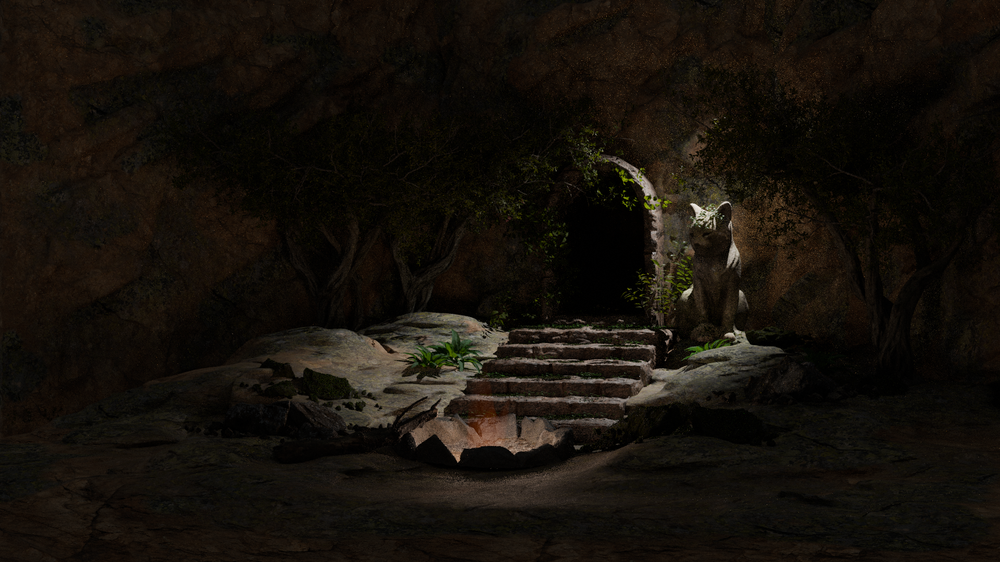
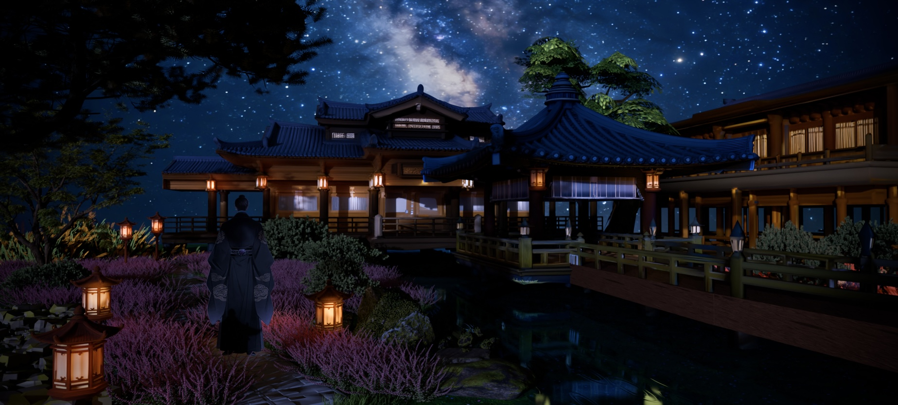
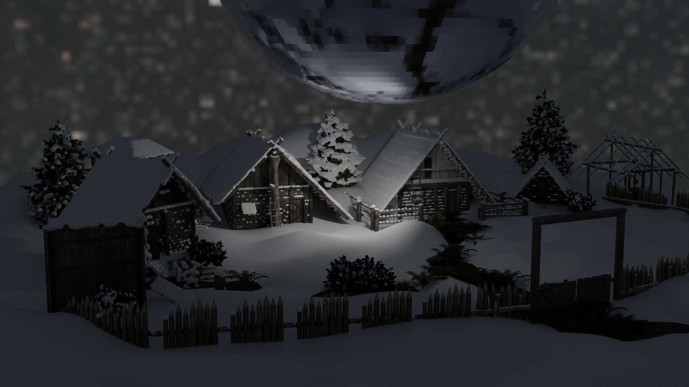
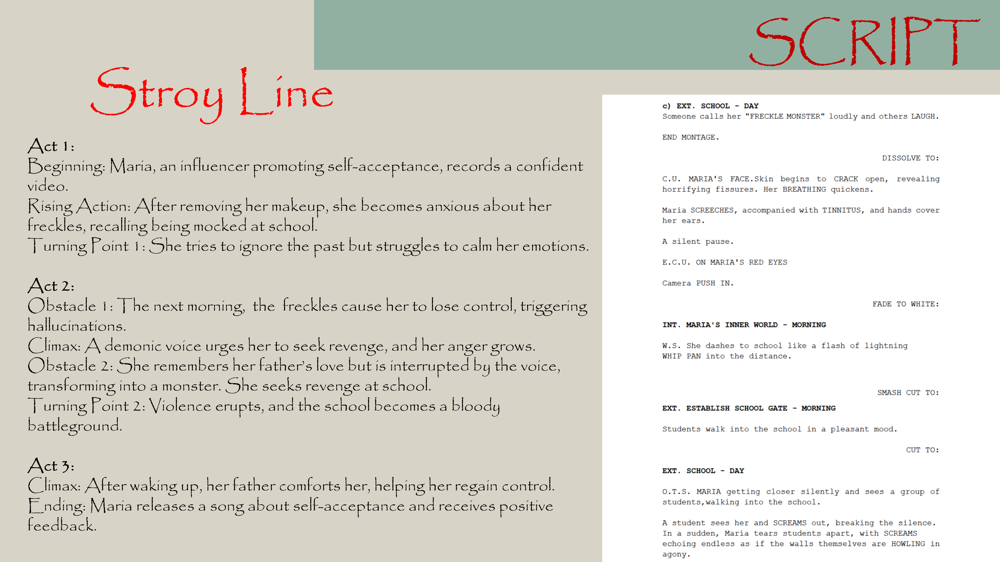
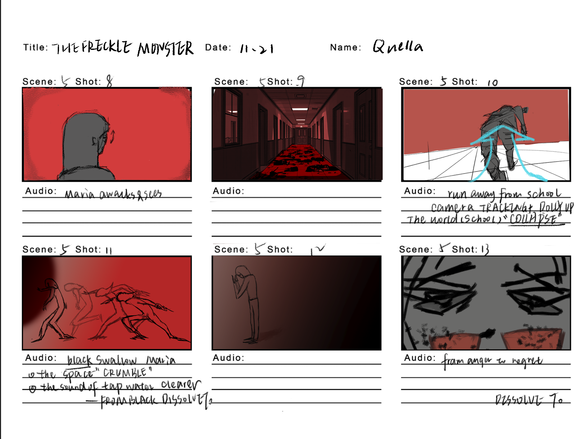
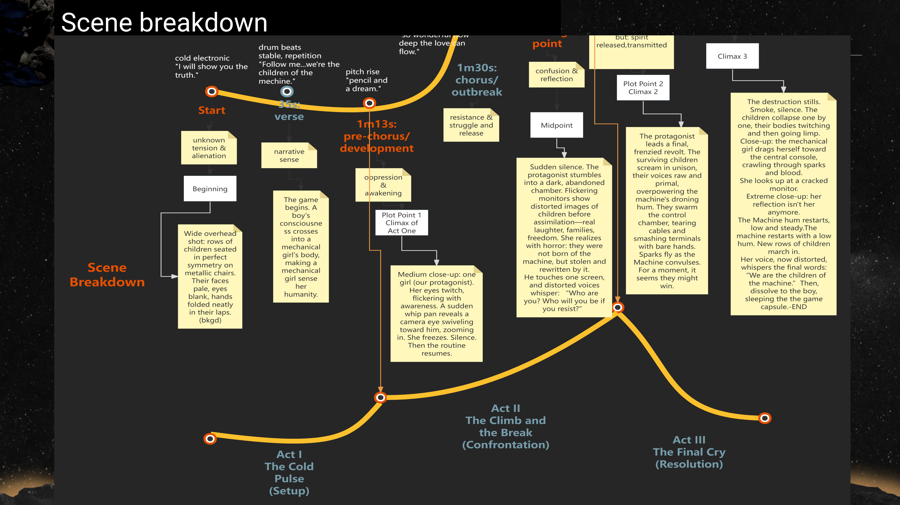
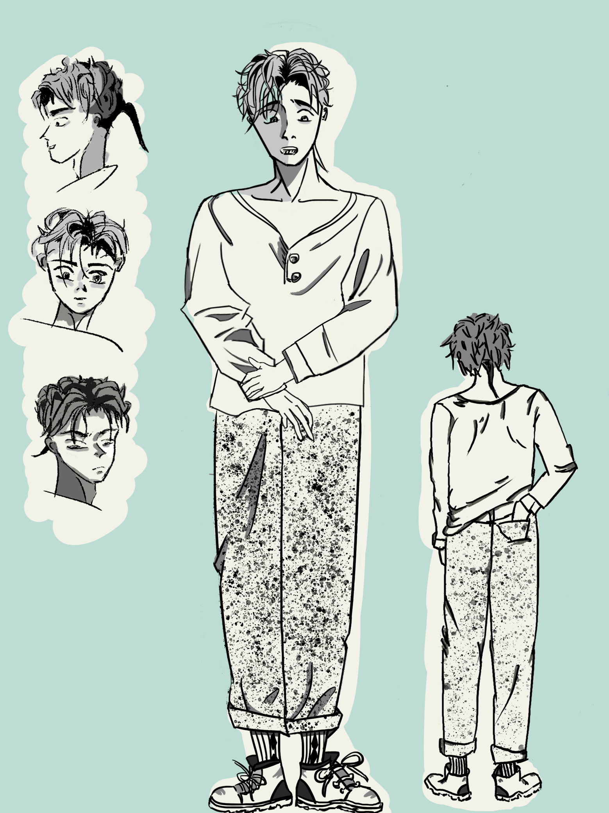
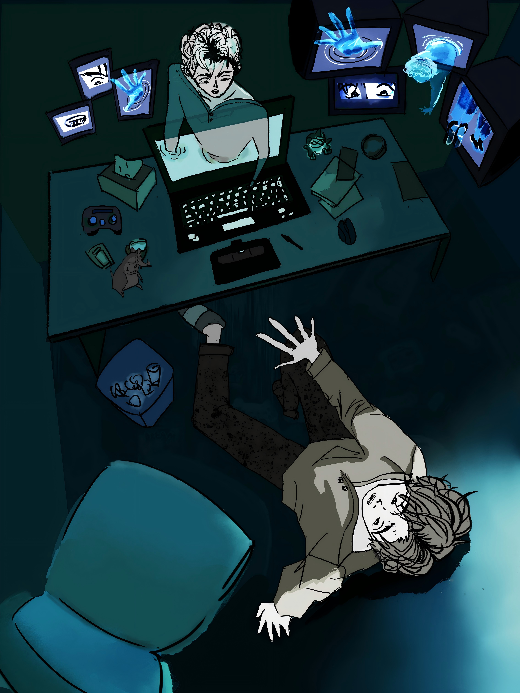
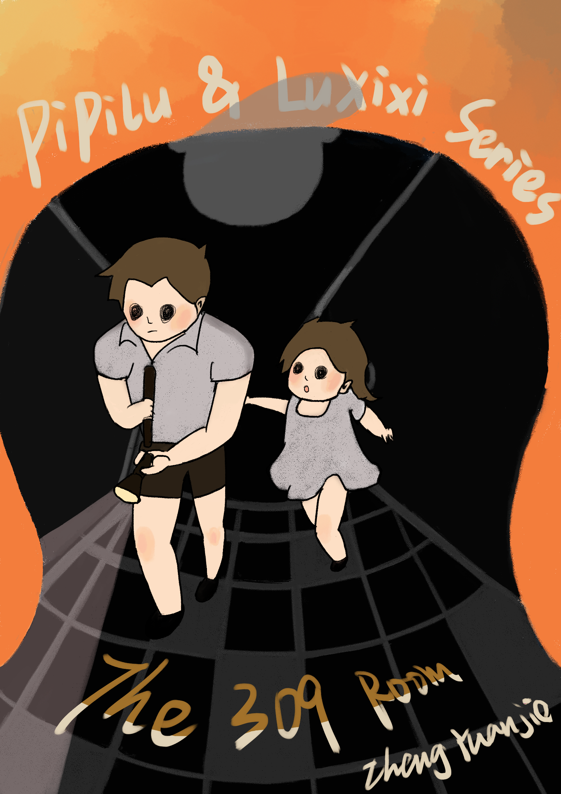
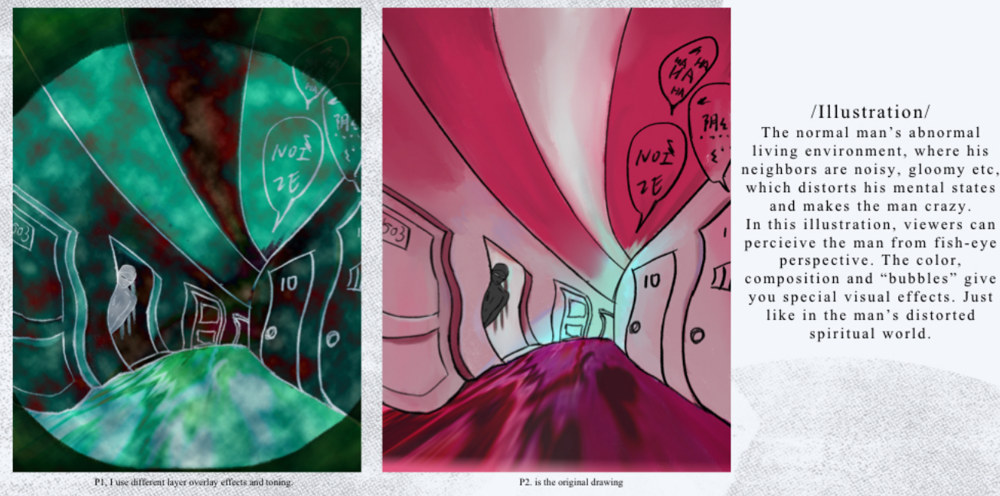

Archive / Images
Images
Scenery, storyboards and illustration from the existing visual archive.
01 / Scenery Design
Environment Studies
Blender environments and atmosphere.

Cave interior.

Historical-inspired scenery.

Snow landscape.
02 / Storyboards
Scripts & Storyboards
Visual narrative planning.

Script structure.

Storyboard panels.

Music video storyline.

Adaptation treatment.
03 / Illustration
Illustration & Character Studies
Scene, cover and character studies.

Character design.

Scene illustration.

Book cover.

Thematic illustration.